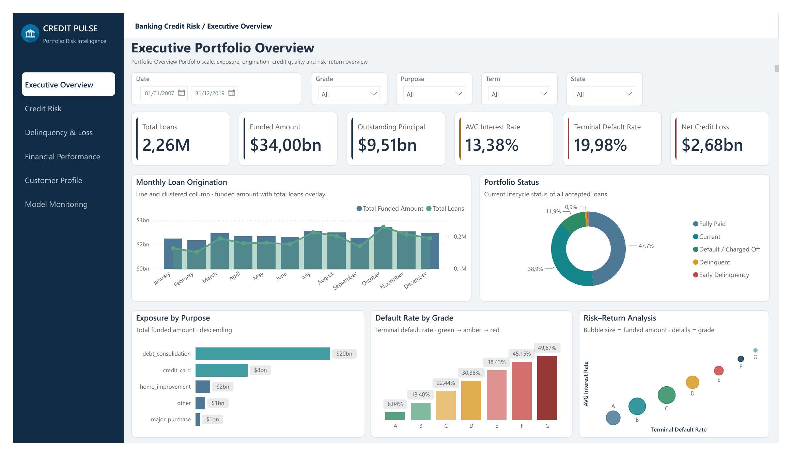
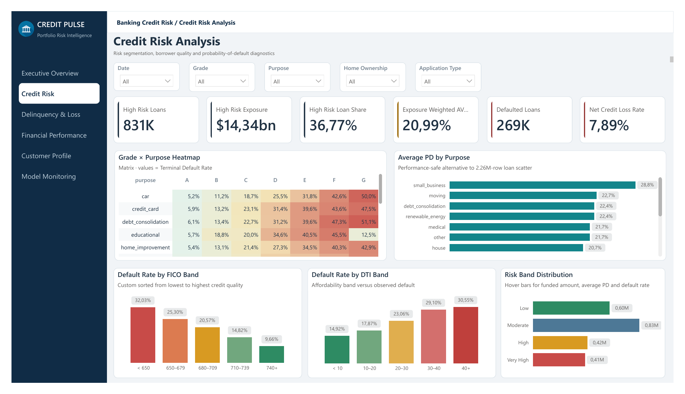
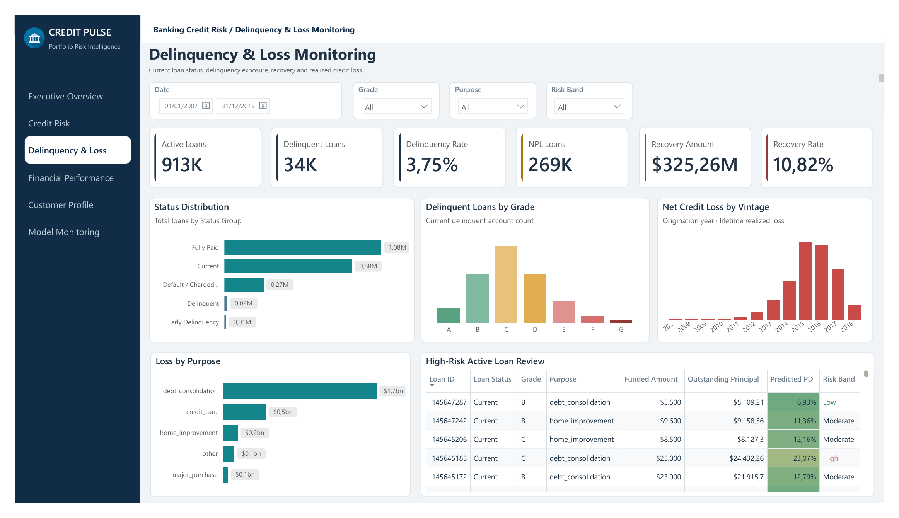
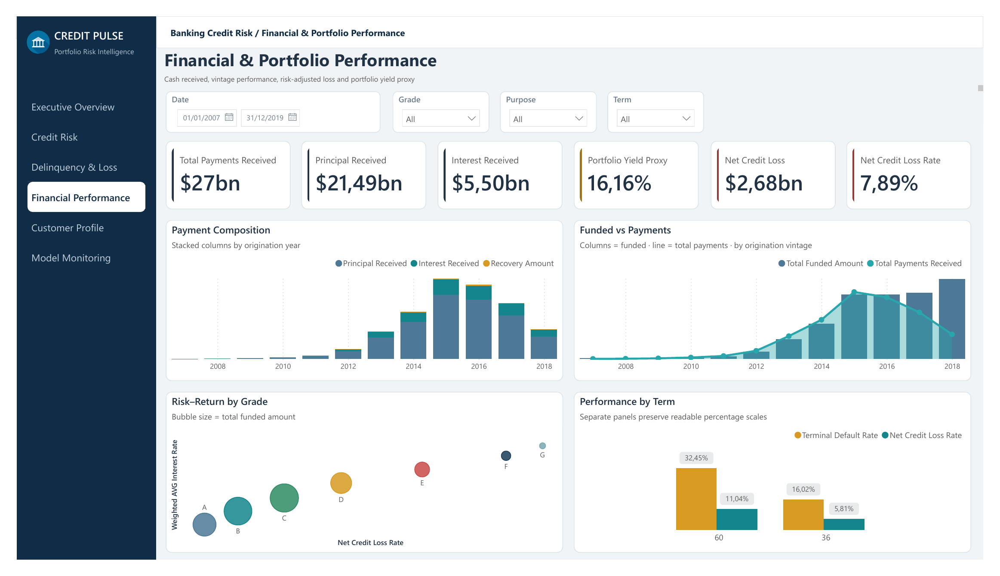
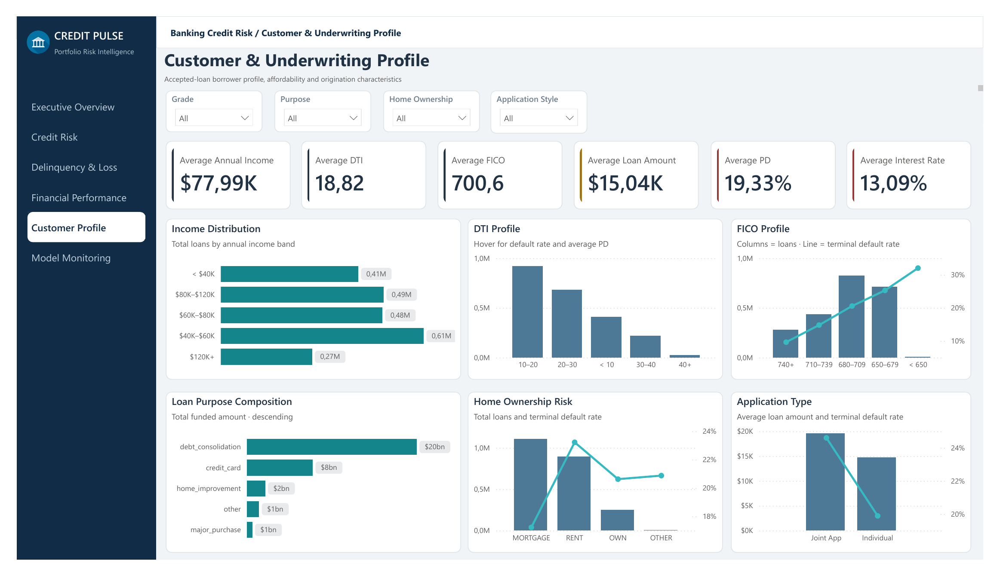
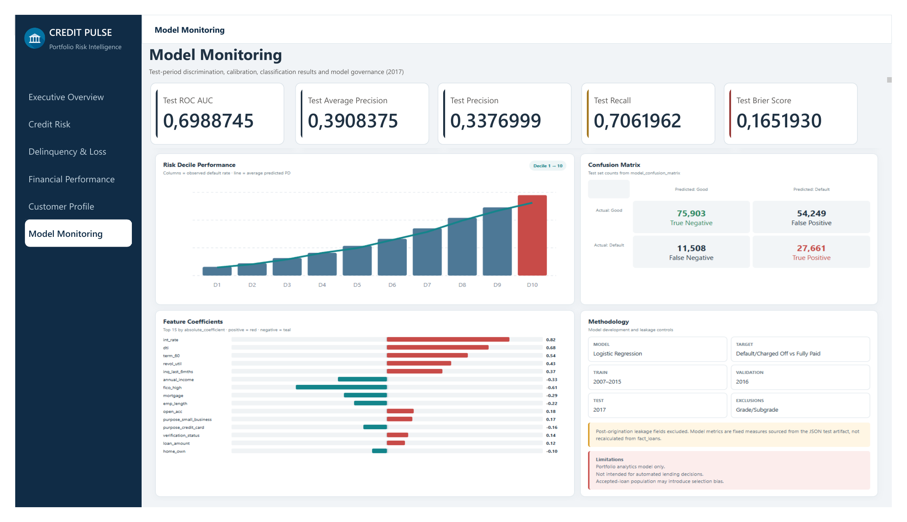

Memory-safe engineering
Process the compressed source in chunks and publish validated fact and aggregate tables.
Portfolio Case Study / 02
A large-scale consumer-lending case study combining portfolio KPIs, out-of-time probability-of-default modeling, risk segmentation and executive Power BI monitoring.

Where are default, loss and outstanding exposure concentrated - and how should portfolio teams respond?
Consumer-lending portfolios contain millions of loans with different prices, borrower profiles, purposes, terms and outcomes. Managers need consistent definitions for exposure, default, loss and predicted risk without presenting the model as an automated lending decision engine.
LendingClub Accepted Loans 2007-2018 Q4. The cleaned analytical population contains one record per accepted or funded loan; terminal outcomes are isolated for supervised modeling to reduce target censoring.
Process the compressed source in chunks and publish validated fact and aggregate tables.
Separate terminal outcomes, audit leakage and test on a future cohort.
Expose fixed model artifacts beside portfolio, loss and risk-appetite views.
The six-page report separates descriptive portfolio management from fixed test-period model evaluation. Select any frame to inspect the full dashboard.
Click to enlarge
01 / Executive Overview ↗
02 / Credit Risk Analysis ↗
03 / Delinquency & Loss ↗
04 / Financial Performance ↗
05 / Underwriting Profile ↗
06 / Model Monitoring ↗The pipeline uses balanced class weights and preprocessing fitted within training. The threshold is selected on 2016 validation data and locked for the 2017 test cohort. The model supports ranking, segmentation and watchlists - not standalone adverse decisioning.
19.98% of terminal loans defaulted and net credit loss reached $2.68B.
High PD should be combined with outstanding principal and delinquency rather than used alone.
Grade, purpose, term, FICO and DTI reveal materially different risk concentrations.
The model captures about 70.6% of defaults but produces substantial false positives.